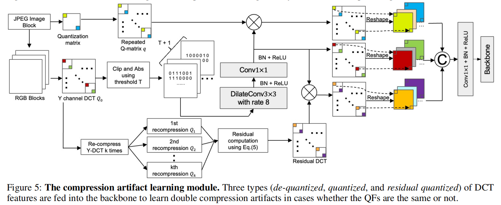

A New Benchmark and Model for Challenging Image Manipulation Detection

\(ZhenfeiZhang^1,MingyangLi^2,Ming-ChingChang^1\)
论文（arxiv）
摘要
所有现有的IMD技术在从大图像中检测小的篡改区域时都遇到了挑战。此外，基于压缩的IMD方法在相同质量因子的双重压缩的情况下面临困难。
为了研究在这些具有挑战性的条件下最先进的（SoTA）IMD方法，我们引入了一个新的具有挑战性的图像操作检测（CIMD）基准数据集，它由两个子集组成，分别用于评估基于编辑和基于压缩的IMD方法。数据集的图像是手工拍摄和篡改高质量的注释。
此外，我们提出了一种新的基于HRNet的双分支网络模型，该模型可以在这些具有挑战性的条件下更好地检测图像编辑和压缩伪影。在CIMD基准上的大量实验表明，我们的模型在CIMD上显著优于SoTAIMD方法。
本文的贡献包括：
- 我们提出了一种新的双分支架构，结合了RGB和频率特征，以实现具有挑战性的图像操纵检测。据我们所知，我们的模型是第一个专注于检测小的被篡改区域的方法。
- 我们引入了开创性的压缩伪影学习模型，能够检测双压缩伪影，无论量化因子（QFs）是不同的还是相同的。
- 我们引入了一个新的高质量的CIMD基准来评估SoTAIMD方法在具有挑战性的操作中的性能。我们将在书面接受后公开CIMD。
- 在CIMD上的大量实验表明，该方法在具有挑战性的图像操作检测方面显著优于SoTA。
数据集
The Challenging Image Manipulation Detection Dataset(CIMD)
在这项工作中，我们的目标是建立一个全面的验证数据集（CIMD），专门用于在压缩和未压缩场景下的小区域伪造（平均小于1.5%）。我们的数据集在数据集大小、图像质量、图像多样性和伪造策略方面都具有优势。
引入了两个独立的子集来分别评估基于图像编辑和基于压缩的方法。收集我们使用佳能RP相机捕获原始图像，包括未压缩的TIFF和压缩的JPG伪造-原始图像对。这些捕捉是在高度多样的多季节拍摄的，特点是复杂和复杂的照明条件。我们的目的是在现实生活中提供一个公正和全面的模型评估。
两个CIMD数据集。我们提供了两个子集：
CIMD-Raw子集由成对的原始未压缩的TIFF图像组成，用于评估基于图像编辑的方法。
> CIMD-压缩子集包括拼接伪图像及其对应的原始JPEG图像，其统一量化因子（QFs）范围在50到100之间。这个子集评估了基于压缩的模型在相同的QF条件下检测伪造的能力。
CIMD-Raw子集(CIMD-R)
CIMD-R旨在提供一个对基于图像编辑的模型在检测未压缩图像上的小篡改复制移动、对象删除和拼接伪造方面的性能的全面评估。未压缩图像的使用消除了伪造区域上不希望的压缩伪影，否则可以被神经网络感知，使对检测的更真实的性能评估。CIMD-R由600张TIFF图像组成，分辨率为2048×1365。还提供了ground-truth标签。此外，CIMD-R采用了一种面向未来的方法，提供16
bit的图像对，可以提供多达\(2^{48}\)种（以万亿）颜色。
对于复制-移动操作，将图像的一部分复制和粘贴到同一图像中，然后是五种后处理方法，即缩放、旋转、水平/曲线增加、光照变化和颜色再分配。
对于删除伪造操作，通过ps中的内容感知填充来从图像中删除选定的区域。内容感知填充被广泛应用于多个数据集（Parketal.2018b；Dong，Wang，和Tan2013b），代表了PS根据周围区域绘制物体的最佳猜测。
对于拼接伪造操作，将一个图像的区域复制粘贴到另一个图片。然后，采用复制-移动操作中相同的后处理方法，使锻造区域与周围环境相协调。
CIMD-Compressed子集(CIMD-C)
CIMD-C旨在评估基于压缩的模型在主压缩和二次压缩具有相同的QFs时检测双JEPG压缩伪影的能力。该数据集包含200张JPEG图像，分辨率为2048×1365，其中QF均匀分布为50≤QF<100。
伪造图像的生成类似于CIMD-R的拼接样本，区别在于伪造图像使用JPEG压缩算法保存，使用与原始图像相同的QF。原始图像由RAW文件生成，确保原始图像第一次被压缩，增强了数据集的可信度。在伪造的图像中，背景是双压缩的，而被篡改的区域是单压缩的。此外，该数据集还包括用于压缩的二进制掩码和QF值，从而增强了其对进一步研究不同QFs的影响的效用。
提出的IMD方法

我们提出的双分支架构能够检测异常特征和压缩伪影，其灵感来自于（Kwon
et al.
2022）。此外，我们的模型可以有效地检测小的操作区域和识别双压缩轨迹，应用相同的量化矩阵（Q-矩阵）。为了实现我们的研究目标，我们采用HR-Net（Wang
et al.
2020）作为我们模型的支柱，基于其提供三倍收益的能力。首先，HR-Net中没有池化层，这确保了这些特性在整个过程中保持高分辨率。其次，该模型在处理不同尺度的特征的同时，也要处理有效的信息交换，这对于获取不同尺度的信息至关重要。最后，HR-Net的输入大小非常适合于DCT特性。由于经过8个速率的扩展卷积处理后，DCT特征的大小减小到输入大小的1/8，这相当于HR-Net的第二阶段分辨率。
为了更精确地定位微小的篡改区域，我们应用面积空间金字塔池（ASPP）（Chen等2017；Yang等2021）和注意机制（Vaswani等2017；胡，沈，和孙2018）仔细设计了模型。
对于RGB流，输入的图像被输入到一个完整的HR-Net，它从视觉内容中学习图像编辑跟踪。
对于DCT流，我们向主干提供量化的DCT系数、q矩阵和新的多次重压缩残差DCT系数，以检测双压缩伪影。这种设计工作，不考虑QF是否相同。为了提高所提出的双分支模型的性能，我们在最后引入了一种自适应加权热图聚合设计，使用软选择来融合由两个分支生成的热图。
其次，该模型在处理不同尺度的特征的同时，还能处理有效的信息交换，这对于获取不同尺度的信息至关重要。
最后，HR-Net的输入大小非常适合于DCT特性。由于经过8个速率的扩展卷积处理后，DCT特征的大小减小到输入大小的1/8，这相当于HR-Net的第二阶段分辨率。我们对RGB流应用完整的HR-Net，而对于频率流，我们使用三分辨率的变体HR-Net，用图5中所示的压缩伪影学习模型代替第一阶段。
压缩伪影学习模型Compression Artifacts Learning Model
当使用相同的QF创建拼接图像时，被操纵的区域被单独压缩，而背景区域被双重压缩。因此，当图像被反复压缩时，不稳定的量化DCT系数逐渐集中在被篡改的区域上，而真实的区域则保持相对稳定。在此基础上，我们引入了一种新的残差DCT图来指导DCT特征，以更好地关注IMD的不稳定区域。
YCbCr 是一种用于压缩彩色图像的色彩空间，其中：
- Y 通道 表示亮度（Luminance），也即图像的灰度级信息。
- Cb 和 Cr 通道 分别表示蓝色差异和红色差异（Chrominance），即色彩信息。
我们的方法只关注于y通道DCT图，因为它对人眼更敏感。给定一个JPEG图像，很容易从JPEG文件报头中得到y通道量化的DCT系数\(Q_0\)及其相应的\(Q\)矩阵。
首先重复\(Q\)矩阵具有与\(Q_0\)相同的大小，我们将重复的\(Q\)矩阵设为\(q\)。
然后，我们使用以下方程依次计算(k+1)次再压缩量化JPEG系数\(Q_{k+1}\)：
\[\begin{cases}\begin{array}{l}D_k=Q_k\odot q\\B_k=IDCT(D_k)\\I_{k+1}=RT(B_k)\\Q_{k+1}=[DCT(I_{k+1})\oslash q]\end{array}\end{cases}\] 其中\(\oslash\)表示元素级划分，D、B、I、Q分别表示去量化的DCT系数、使用逆DCT进行反变换块的DCT系数、使用图像块进行反变换块的DCT系数和使用量化JPEG系数进行反变换块的DCT系数。上述方程中变量的下标表示重压缩的次数，我们实验设置了\(k=7\)。\(RT(.)\)是四舍五入和截断操作。\([.]\)表示该舍入操作。
然后，将k次重压缩后的残余去量化DCT系数R定义为：
\[R=\frac{1}{k}\sum_{i=1}^{k}(Q_i-Q_{i-1})\] 对于原始的通道系数\(Q_0\)，在把它们转换成一个二进制卷之后，我们使用一个阈值\(T\)来执行一个剪切操作，将此二进制值转换表示为：
\[f:Q_o^{H\times W}\rightarrow \{0,1\}^{(T+1)\times H\times W}\] DCT系数\(Q_0\)被转换为二进制：
\[f(Q_0(i,j))=\begin{cases}1, & if|clip(Q_0(i,j))|=t,t\in [0,T]\\\\0, & otherwise\end{cases}\]
利用\(clip(.)\)提取\([−T,T]\)中的直方图特征，这对GPU内存约束是必不可少的。我们实验中将T设为20。此外，我们应用绝对值运算作为DCT直方图显示的对称性。

在频率流中，首先将图像输入到图5所示的压缩伪影学习模型中，提取各种DCT特征。随后，DCT特性被输入到HR-Net的一个变体中，该变体在三种不同的分辨率（1/8、1/16和1/32）下运行。
注意力空间金字塔池ASPP
为了精确地定位小的篡改区域，我们使用图6(a)所示的注意力空间金字塔池（ASPP）仔细设计了我们的模型。ASPP通过不同的接受域捕获远程距离信息，并处理尺度变化。它由三个具有不同速率的扩张卷积层和一个全局平均池化（GAP）组成。得到的特征被连接并传递到1×1卷积。
注意力交互机制
其中
- 左边输入为四个分辨率的分支
- CA：通道注意力ChannelAttention
- UP：双线性上采样BilinearUp-sampling
- SA：空间注意力SpatialAttention
接下来，我们将描述注意力如何在RGB流中交互式地工作，其中的过程实际上与频率流相同，具有不同数量的输出分辨率分支。
通道注意力ChannelAttention
左侧输入为HRnet不同分辨率下的输入：
\[I\in R^{H \times W \times 3}\rightarrow\begin{cases}\begin{aligned}F_1 \in R^{H/4 \times W/4 \times C_1} & & ,C_1=48\\F_2 \in R^{H/8 \times W/8 \times C_2} & & ,C_2=96\\F_3 \in R^{H/16 \times W/16 \times C_3} & & ,C_3=192\\F_4 \in R^{H/32 \times W/32 \times C_4} & & ,C_4=384\\\end{aligned}\end{cases}\] 自下而上的通道注意特征的计算使用如下： \[F_n = C(F_{n+1})\odot F_n, n = 1,2,3\] 其中，\(C(.)\)表示通道注意块，如下图所示，\(\odot\)表示元素级乘法。由于\(F_4\)包含了最高级别的语义信息，因此它在通道级别上保持不变。
\[C(F)=\sigma(E(GAP(Conv_{1\times 1}(F))))\]
其中1×1卷积，以减少信道，GAP（·）为全局平均池，激励过程 \(E(.)=C^{'}\rightarrow C^{'}/r \rightarrow C^{'}，r=4\)，\(\sigma (.)\)为Sigmoid激活函数。
双线性上采样BilinearUp-sampling
在应用自底而上的信道注意后，使用双线性上采样方法对特征图\(F_2\)、\(F_3\)和\(F_4\)进行上采样，以匹配\(F_1\)的分辨率。
空间注意力SpatialAttention
应用自上而下路径的空间注意机制，由： \[F_m=S(F_{m-1})\otimes F_m,m = 2, 3, 4,\] 其中，S(.)为空间注意力，如下图所示。由于\(F_1\)包含了丰富的空间信息，因此在空间层面上保持不变。
热图聚合HeatmapAggregation
每个分支的特征图在经过上采样和交互注意后，具有相同的分辨率。然后将这些特征连接在一起，形成最终特征，用于推理阶段的自适应加权热图聚合。
我们的模型生成了两个最终的热图，它们通过软选择进行聚合。具体来说，我们采用双线性特征上采样来升级频率流的热图，以匹配RGB流热图的分辨率。然后，我们将Softmax激活函数应用于热图，然后使用全局最大池化（GMP），记为GMP（·），来选择主热图及其相应的权重。这种选择是基于更高的值，这表明与其他热图相比，它具有更强的定位响应。
我们使用\(h_m\)和\(h_s\)定义主热图和次热图。因此，加权聚合热图h可以表示为：
\[h = GMP(h_m)\cdot h_m+(1-GMP(h_m))\cdot h_s\]
最后，我们在预测的二值掩模上应用一个不可训练的GMP来执行图像级检测，因为图像级检测与像素级预测高度相关。
实验
实验设置
数据集。本研究中使用的训练数据集大多采用了（Kwonetal.2022），其中包括CASIAv2、FantasticReality、IMD2020，以及专门为使用不同QFs检测压缩伪影而设计的数据集。测试阶段需要使用CIMD-R和CIMD-C来分别评估基于图像编辑和基于压缩的方法的有效性。补充材料中提供了有关所使用的数据集的进一步细节，以及与选定的公开可访问的数据集进行的评价指标的比较分析。
实施细节。我们的模型是使用PyTorch（Paszke等人，2019年）实现的，并在8个RTX2080GPUs，上进行训练，批处理大小为4。我们将初始学习率设置为0.001，并呈指数衰减。为了减轻不平衡数据集对模型训练的影响，我们从每批的每个数据集中随机选择相同数量的样本。训练过程总共250批。该模型被设计为接受各种图像格式，包括JPEG和非JPEG格式。对于非jpeg图像，该模型采用全1的Q矩阵对样本进行压缩，这相当于使用100的QF进行无损压缩。RGB流的主干使用ImageNet进行预训练（(Krizhevsky,Sutskever,andHinton2017），而DCT流使用（Parketal.2018a）引入的双压缩图像进行预训练的方法。为了提高模型检测小篡改区域的灵敏度，设计了训练目标来最小化像素级的二值交叉熵损失。
比较网络的选择。为了保证公平的比较和评估之前使用新引入的CIMD的模型，我们选择了使用这两个标准的最先进的方法： (1)预训练模型是公开的，(2)我们使用的评估数据集不在它们的训练集中。根据这些标准，我们选择了RRU-Net、MantraNet、CR-CNN、SPAN、PSCC-Net、MVSS-Net、IF-OSN、CAT-Net、DJPEG和对照品。其中，DJPEG和Comprint被设计用于压缩伪影检测，而CATNet可以联合检测异常特征和压缩伪影。上述所有的研究均在相关的工作部分中被适当地引用。我们使用CIMD-R来评估基于图像编辑的方法，用CIMD-C来评估基于压缩的方法。
在CIMD-R上的评估结果
使用CIMD-R子集进行评估。表1报告了使用CIMD-R的基于图像编辑的方法的结果，其中所有图像样本都未压缩。
表1报告了使用CIMD-R的基于图像编辑的方法的结果，其中所有图像样本都未压缩。像素级f1评分使用每张图像的最佳f1阈值，并使用固定的f1阈值0.5。最佳分数用粗体突出显示。我们的方法在图像级和像素级的检测任务中都取得了最好的性能。值得注意的是，我们的方法在图像级和像素级评估方面都优于现有的SOTA方法，这表明了它在检测小篡改区域方面的优越性。
在CIMD-C上评价基于压缩的方法的评估结果
表2比较了基于压缩的IMD方法的性能，其中所有图像样本都使用相同的QF进行双压缩，评估设置与表1中使用的设置一致。
表2比较了基于压缩的IMD方法的性能，其中所有图像样本都使用相同的QF进行双压缩，评估设置与表1中使用的设置一致。我们的方法在整体性能方面仍然是表现最好的，突出了我们的方法对于具有相同QF的双压缩图像的有效性。
消融研究
我们提供了一个如表3所示的简单的消融研究。请注意，我们的RGB流在压缩的数据和未压缩的数据中都是有效的。
值得注意的是，由于没有压缩伪影，频率流在CIMD-R中不能产生令人满意的结果。然而，当这两个分支协同工作时，模型的性能在定位和检测评估方面都有所提高。在补充材料中提供了额外的烧蚀研究和实验结果。
结论
本研究提出了一种新的具有挑战性的图像处理检测（CIMD）数据集，它包括两个子集，分别用于评估基于图像编辑和基于压缩的方法。这些数据集被手动获取和篡改，并提供了高质量的注释。此外，我们提出了一种双分支的方法，在使用CIMD数据集检测图像操作方面优于最先进的模型。我们已经发布了我们的数据集，以促进未来的研究。